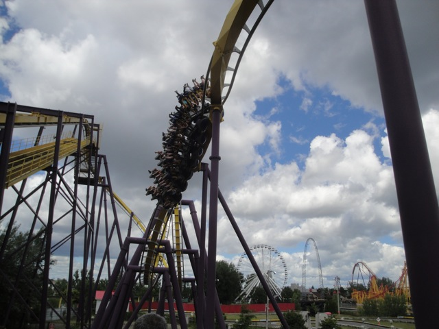
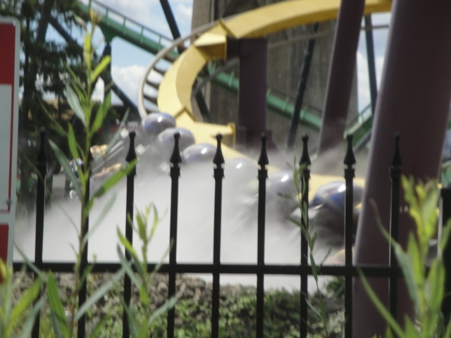
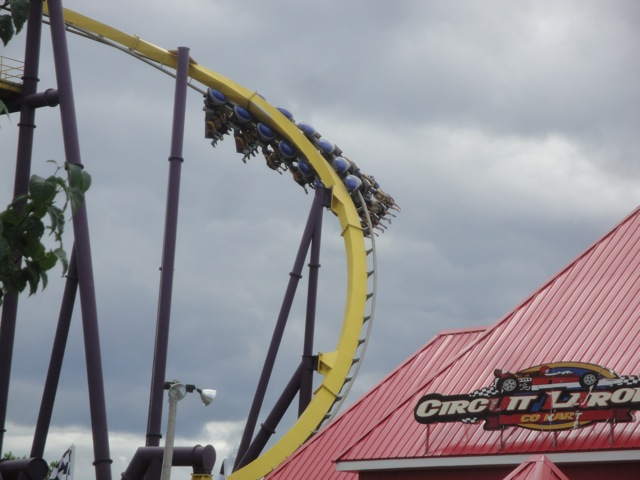
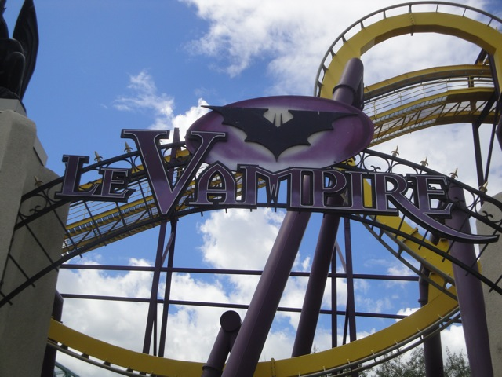
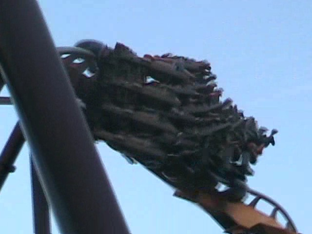
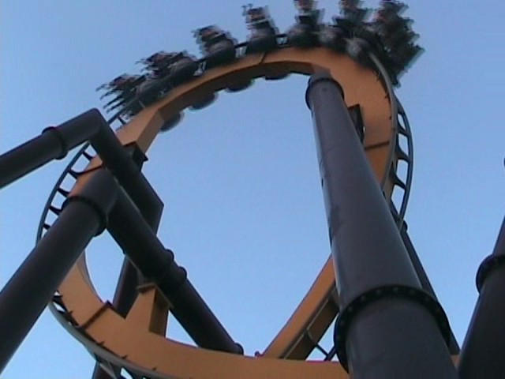
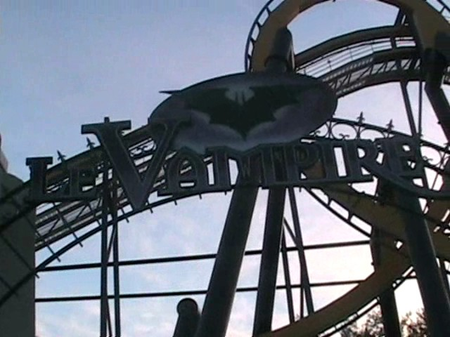
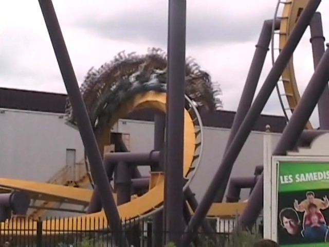
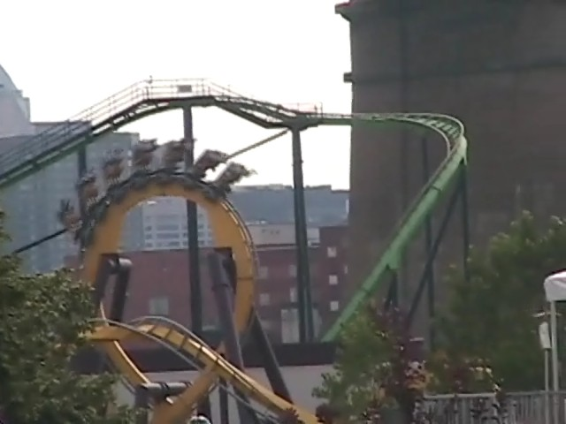

| |
Vampire Review

We're here at La Ronde. Today's ride we'll be reviewing for you is Vampire. After getting in the seats and pulling down the shoulder restraint, we leave the station. As we climb the lifthill, you can get a good view of La Ronde and the city of Montreal. Once you reach the top of the lifthill, there isn't much time to say anything until you're swept into the first drop. While it's not anywhere close to the greatest first drop in the world, it's still a pretty good first drop that gives you more than enough speed to complete the course. After the first drop, you soar into a vertical loop. I hope your ass likes the seat because it's going to glue itself to the seat for the next 60 seconds. After the first loop, we head for the best part of the ride, THE HEARTLINE SPIN!!!!! As you reach the Heartline Spin, it Whips you through!! It tickles your stomach as you just get WHIPPED through it!!! While I admit, it's not nearly as powerful as Kumba, at least this heartline spin has a whip unlike other certain B&M coasters. After the Heartline Spin, We get to go through yet another loop. As we flip head over heels once again, you just get happy. After that loop, you roar up into a helix. After surging upwards, you quickly go through a turn. This is the only part of the ride to catch your breath in. But don't get to attached to it because right before you know it, you're right back in the action. Then you head straight into a corkscrew. The corkscrew just plows you through. And when that's done, you immedietly fly thorugh a turn. And that turn just slams you into corkscrew #2. And then you just fly through that. After that, you roar into a turn. But as you roar through, SMACK!!! You get hit with a wall of mist, that blinds you, cools you off, and surprises you. You feel the Gs in your legs! But you don't have any idea what's going on. But then, you just slam into the brake run!!! After seeing this ride, I can totally see how this got cloned all around the world!! This ride may not look so great. But my god, This little bastard has POWER!!!! And to make this even better, this is one of the strongest Batman Clones out there!! =) If you have never been on a Batman the Ride Clone, You HAVE to ride it if you're visiting. I'd even recommend riding Vampire here even if you have Batman at your home park if the line is less than 15 min (It won't, but hopefully, you'll be smart enough to get the Gold Flashpass).
8/10
Location: La Ronde
Opened: 2002
Built by: B&M
Last Ridden: August 2, 2011
I have ridden this exact same ride at the following parks.
Sea World San Antonio
Six Flags Fiesta Texas
Six Flags Great Adventure
Six Flags Great America
Six Flags Magic Mountain
Six Flags Over Georgia
Six Flags Over Texas
Six Flags St. Louis
Vampire Photos








Home
|